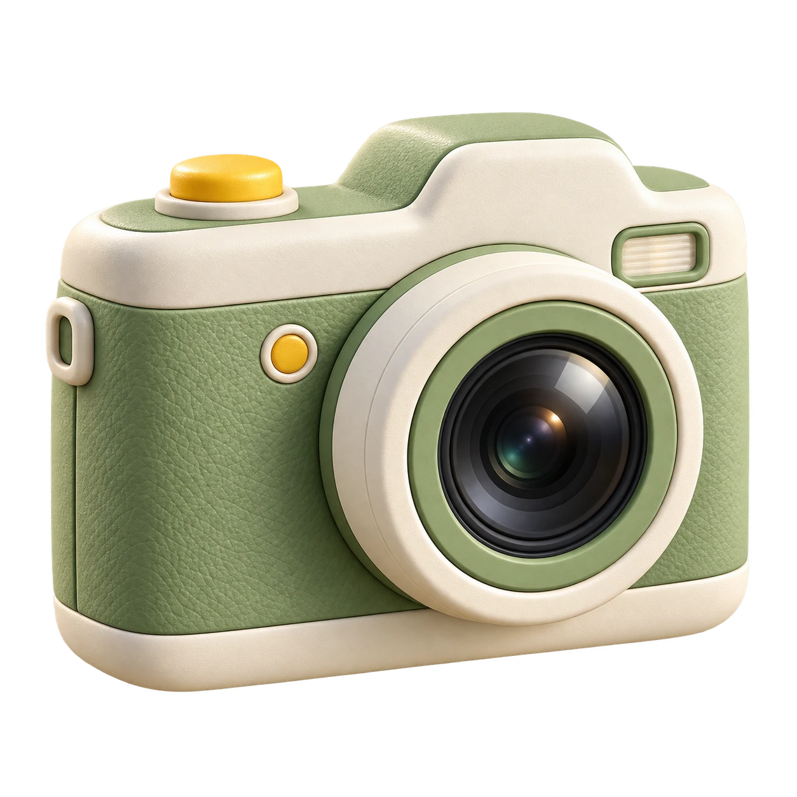
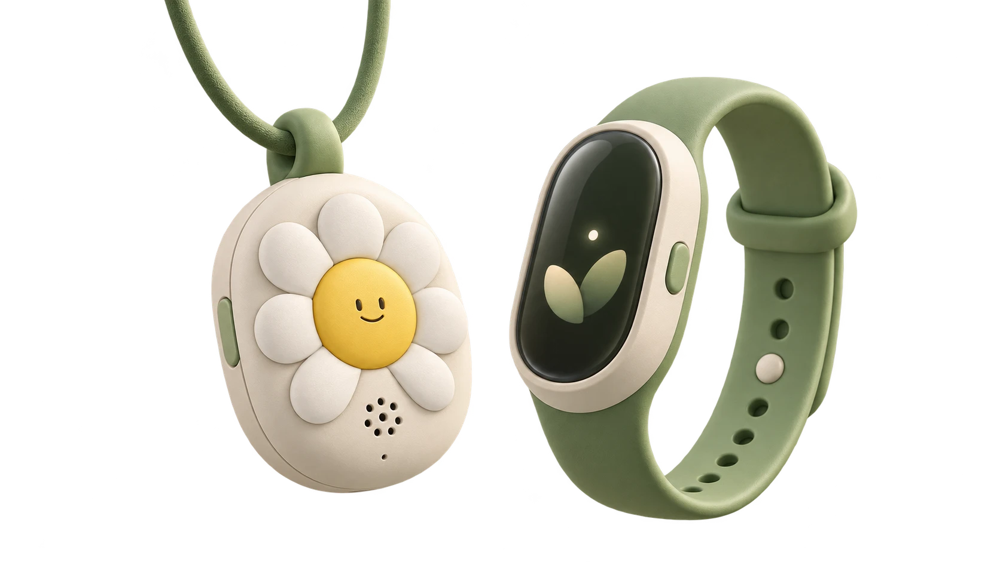
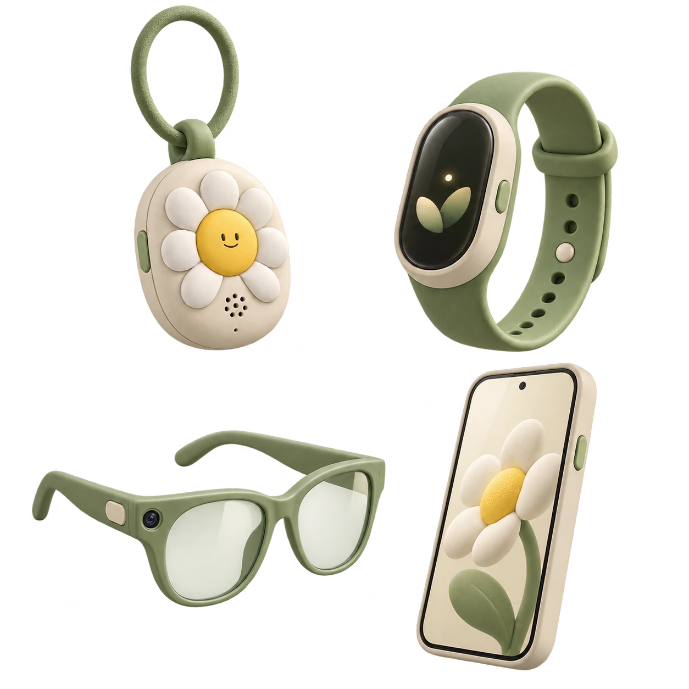
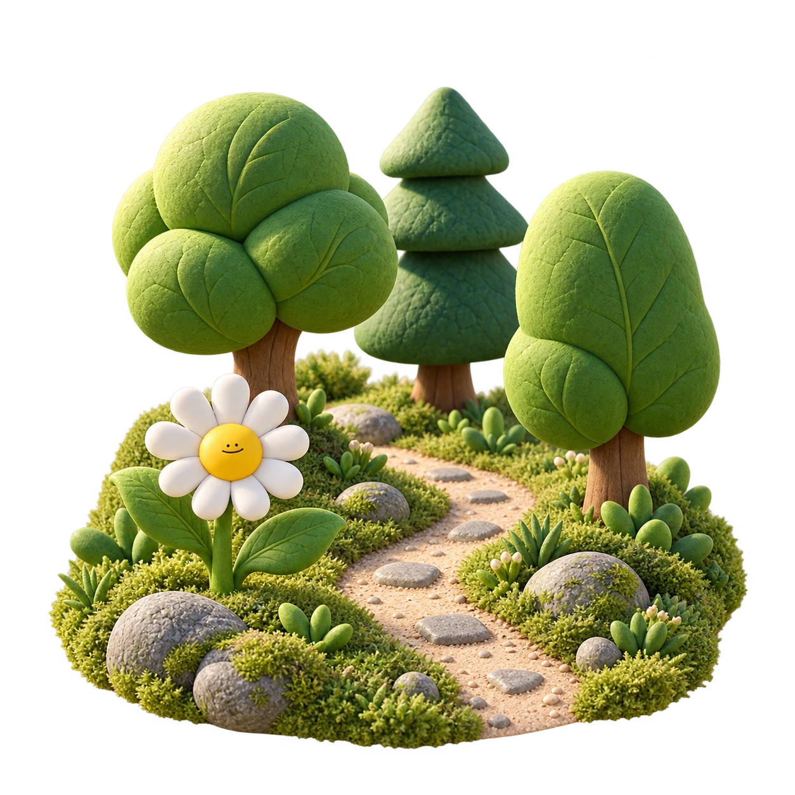
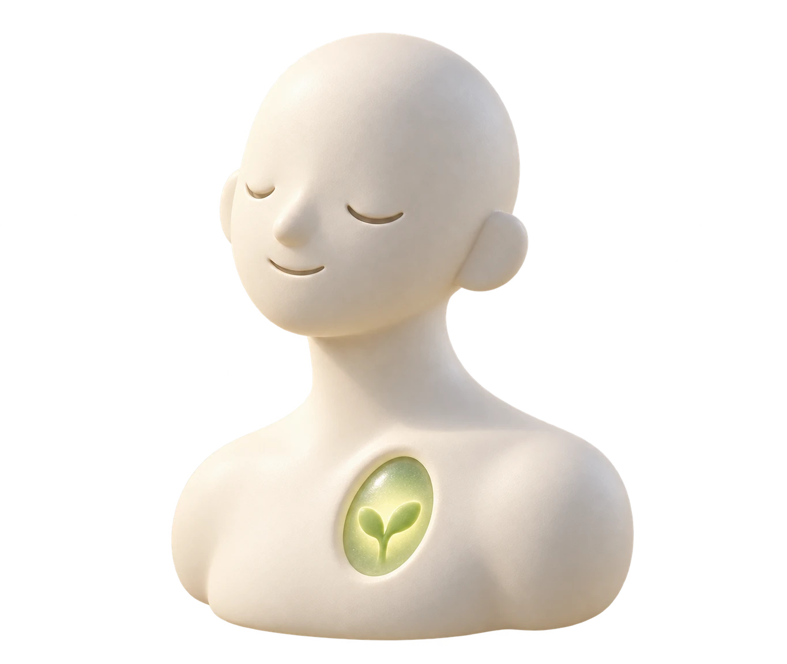

主观层
我如何感受与思考
- 想法与观点
- 我的判断、灵感，以及看待事情的方式
- 心情与感受
- 今天的情绪，以及它发生的具体情境
- 偏好与意愿
- 喜欢什么、在意什么、希望如何选择
依据：本人的表达与确认
从一个被忽略的问题开始
一句话、一个念头、一段影像、一次心跳。生活产生的信息，远比我们主动记录的更多。
信息不断产生，却没有形成可积累的资产。
纸笔日记依赖主动书写，难以覆盖多模态信息。已有数据分散在不同设备和应用中，缺少统一的时间线与关联。


以天为单位连接影像、表达与生活指标，
让分散的数据成为连续的个人资产。
从信息收集，到持续沉淀
将原始记录转化为有分类、有来源的个人信息，
随时间积累，持续更新对一个人的理解。
依据：本人的表达与确认

依据：设备数据与有来源的事实记录
饮食习惯、稳定偏好、近期状态与生活变化——保留依据，随新记录更新。

影像示意照片也能成为可理解的数据
独立的影像 Agent 阅读画面，结合当天的文字、时间与位置，为照片生成一句话介绍，让影像进入检索与分析。
一条弯曲的步道穿过树林，路旁分布着花草与石头。
处理流程示意 · 原图、时间与上下文一并保留；一句话描述用于语义检索。
面向 Agent 的数据基础
不仅保留内容，也保留时间、来源与关系。
让 AI 能够阅读、检索，并进行跨维度分析。
已采用 Markdown、媒体文件与 JSON 元数据；事件语义关联为扩展设计。
上周的今天，晚饭吃了什么？
那天晚上，你又是几点睡的？
当饮食、睡眠、情绪与习惯进入同一条时间线，单个数据点就有了可以相互参照的上下文。
跨日回看，识别反复出现的模式，形成可验证的生活洞察。
一个自动搜集、管理、分析你的数字资产的平台
按时间回看当天的影像与文字，补充细节，保留值得记住的片段。
真实产品界面；照片已模糊，正文与统计为演示内容。
保留自己的文风AI 转写参考已有日记，先看候选，再决定采用。
记录可带走Markdown、媒体文件与结构化数据。
由你掌握的 context
让不同的 Agent 按需连接你的个人 context。
换一个 AI，无需重新介绍自己。

你的数字分身影像：照片与视频，关联拍摄时间和当天记录。
连接经历、影像与表达，组织有上下文的个人作品。
授权连接为未来交互示意。选择 Agent 查看连接范围，选择 context 查看其内容。
软硬件一体的未来生态
从持续采集到长期积累，
为个人 Agent 提供可靠的 context 基础。
多源信息按天归档，形成连续的个人数据资产。
多种硬件捕获生活信息，软件保留内容、时间与来源。
硬件与 Agent 服务为概念规划，素材为设计示意。